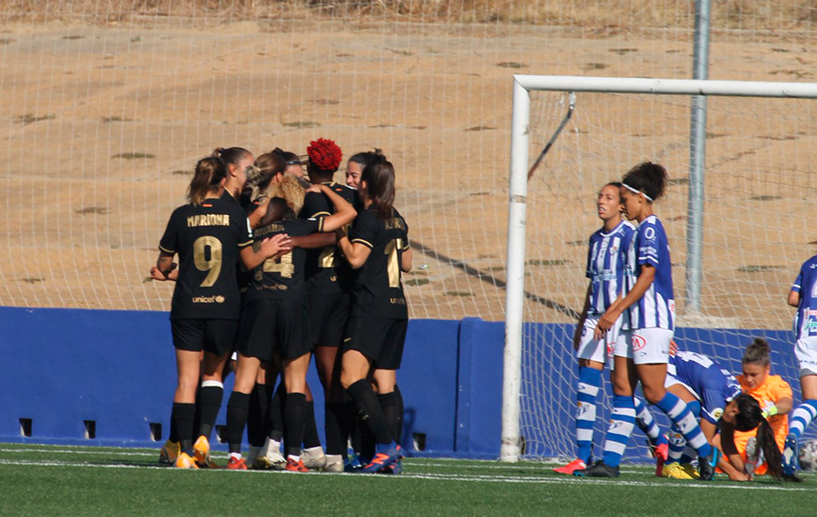
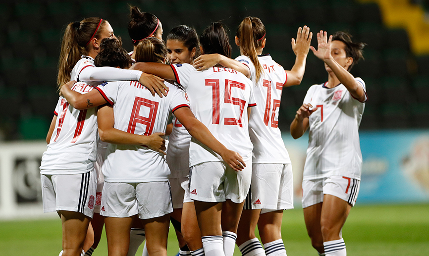

Ultimes Noticies
El FC Barcelona, líder en solitario en Primera Iberdrola
Las azulgranas firmaron su "tres de tres" con la victoria en Huelva. La Real Sociedad, con dos victorias y un partido menos, podría igualar los números de las catalanas. Atlético y Athletic, en las primeras plazas. Foto: @FCBFemeni
España se concentra con vistas a la República Checa y la EURO
España busca tres puntos que son vitales para las aspiraciones de las de Vilda de conseguir el pase a la fase final del Campeonato de Europa que se jugará en Inglaterra en 2022. Enfrente, las checas son el rival con más puntos en el grupo de clasificación. Es por ello que la victoria se antoja fundamental para adquirir el billete a la EURO lo antes posible. El conjunto nacional, tras vencer en septiembre a Moldavia, se cita este lunes, a las 13:00 horas, en la Ciudad del Fútbol, donde permanecerá concentrado hasta el próximo jueves. Ese día, la delegación de la RFEF viajará hasta Sevilla. Este martes, el entrenamiento de la Selección española en la Ciudad del Fútbol será a puerta abierta para los medios de comunicación, a partir de las 18:30 horas. Igualmente, en el entrenamiento oficial de España en la Cartuja, los medios tendrán acceso a los primeros quince minutos (18:30 horas) El encuentro ante la República Checa se disputará en el estadio Olímpico de la Cartuja el viernes próximo, a las 21:00 horas y estará dirigido por la colegiada sueca Sara Persson. Será la primera visita de la Selección española femenina a la ciudad andaluza.
